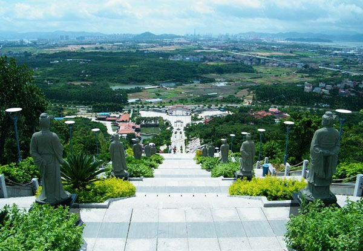
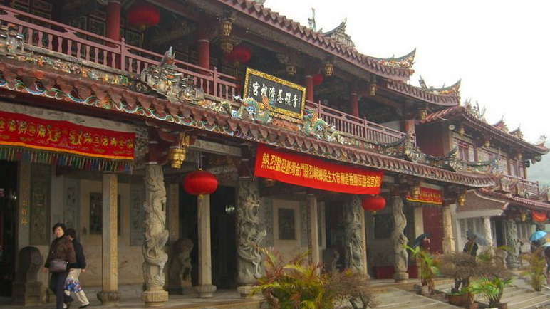
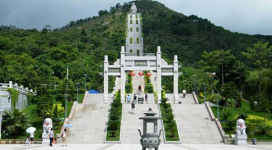

海沧青礁慈济祖宫，又称东宫，始建于南宋绍兴二十一年(1151年)，系厦门市最大的民间信仰场所和重要的历史文化古迹，被广誉为“闽台慈济第一宫”。青礁慈济祖宫于1996年被列为全国重点文物保护单位，2005年被列为福建省非物质文化遗产，2008年被列入第二批国家级非物质文化遗产保护名录，2011年被国台办授予海峡两岸交流基地，2012年被评为国家4A级旅游景区,2013年获评厦门岛外游客最喜爱的旅游景区。
2006年是吴真人羽化970周年和青礁慈济祖宫立庙855周年，为弘扬吴真人慈怀济世的精神，青礁慈济祖宫景区在政府的指导和闽台各地保生大帝信众支持下，参与承办首届海沧保生慈济文化节。为进一步弘扬“健康•慈济•和谐”的保生慈济文化，景区于2007年、2008年、2009年、2012年、2013年继续参与承办第二届、第三届、第四届、第五届、第六届海沧保生慈济文化节，得到了全国政协、国台办、省委、省政府、市委、市政府的大力支持和台湾同胞、海外侨胞的热烈响应。2007年8月、2008年7月、2010年4月，青礁慈济祖宫保生大帝神像先后赴金门、澎湖、台湾本岛巡礼。文化节和巡礼活动进一步扩大了青礁慈济祖宫的影响，深化了两岸文化交流，增进了两岸同胞的情谊和福祉。
以保生慈济文化节和巡礼活动为平台，深入挖掘海沧保生大帝信仰内涵，深化对台文化、经贸和各界交流，海峡两岸保生慈济文化节已经成为两岸保生大帝信众共同的节日，成为两岸开展民俗文化交流的牢固平台。
以文化节举办为契机，青礁慈济祖宫进行了有史以来最大规模的建设。到目前为止，建成了主山门、颂典广场、保生堂、圣德堂、历史名医长廊、中药百草园、主轴景观步行道、展示中心及水上餐厅等景区配套设施。按照规划，青礁慈济祖宫将建设成为民间信仰朝圣中心、闽南民俗文化展示窗口、中医药展示教育园区、旅游休闲圣地和两岸民间交流的载体。
 330445074@qq.com
330445074@qq.com 12345
12345